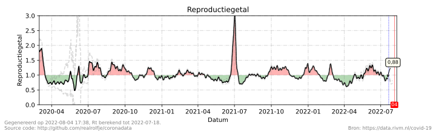
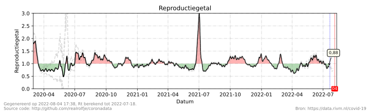
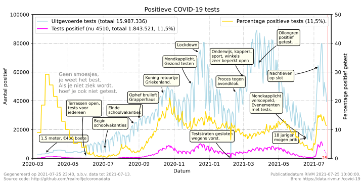
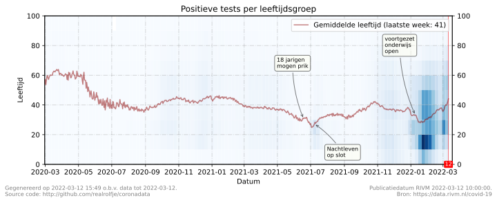
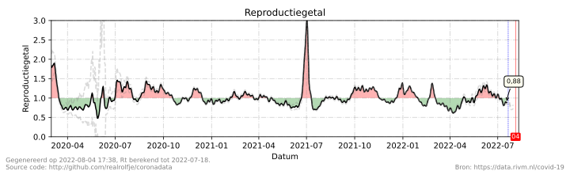

Geen smoesjes, je weet het best:
Houd afstand, werk thuis, was je handen, vermijd drukke plaatsen.
De belangrijkste basisregels vind je op rijksoverheid.nl. Het installeren van de coronamelder app, dragen van een masker en/of afgeven van je contactgegevens in de horeca is niet verplicht.
